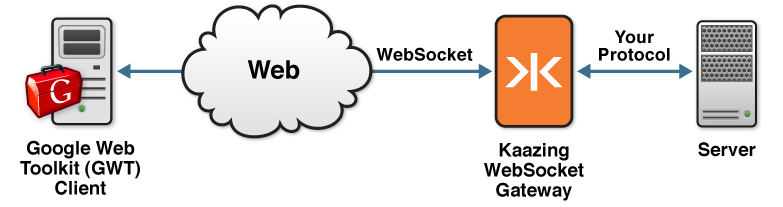
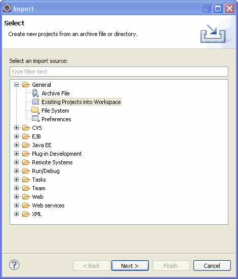
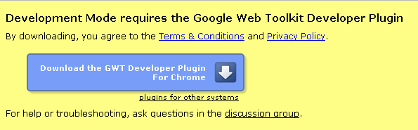

How to Build Clients with Google Web Toolkit Using Kaazing Gateway
Google Web Toolkit (GWT) is a toolkit for building complex browser-based applications, which allows developers to code in Java and cross-compile Java source into JavaScript. The following figure shows a high-level overview of the architecture:

The Kaazing Gateway GWT Client Code Library provides a starting point for building real-time web applications with GWT. The out of the box GWT demo application described in this document illustrates how you can create a simple GWT application that connects to Kaazing Gateway using WebSocket and ByteSocket.
How to Use the Kaazing GWT Client Code Library and Running the Demos
The following steps show you how to install and use the Kaazing Gateway GWT Client Code Library to run the out of the box WebSocket and ByteSocket demos from the Eclipse IDE.
Open the file GATEWAY_HOME/conf/gateway-config.xml in a text editor.
Search for "<type>echo</type>" and add a cross-site constraint for the possible localhost origins for the content that is served up by the development web server within Eclipse. By default, cross-site access to backend services is denied, so adding this cross-site-constraint allows you to "white-list" cross-origin sites. The following example shows the new constraints in lines 6-11.
Note: The development web server within Eclipse serves up pages at the IP address 127.0.0.1 (localhost) on port 8888 by default. If you changed this, you must change the origin specified in the cross-site constraint and add the IP address and the port number you are using.
Save the file.
Follow the instructions in Setting Up the Gateway and Clients to start Kaazing Gateway. Or, if you've already started the Gateway, restart it.
Verify that the Gateway is running by opening a browser and visiting http://localhost:8000. You should see the welcome page to Kaazing Gateway.
In the Eclipse IDE, choose File > Import.
In the Import dialog, choose General > Existing Projects into Workspace and click Next, as shown in the following figure.

Click Select archive file and browse to GATEWAY_HOME/demo/gwt/src/gateway/GWTClient.jar file, then click Open. This creates a project called GWTClient.
In the Import dialog, click Finish.
Compile the GWTClient project. To do so, right-click the GWTClient project, select Google > GWT Compile.
In the GWT Compile dialog, in Entry Point Modules, click Add.
In the GWT Module Selection dialog, click WebSocketDemo and then click OK.
In the GWT Compile dialog, click Compile. The Eclipse console will report the status of the compilation.
When the compilation is complete, right-click the GWTClient project, click Run As, and then click Web Application. The Development Mode view displays at the bottom of Eclipse.
In the Development Mode console, right-click the URL and click Copy.
Paste the URL into the Google Chrome browser and press Enter.
If prompted, follow the steps to download and install the GWT Developer Plugin, as shown in the following figure, then restart your browser.

Figure: GWT Developer Plugin prompt
In your browser, you should now see the Kaazing WebSocket-based GWT client in action.
Click Connect, then Send Text, and then Send Binary.
This simple out of the box demo shows a GWT-based Echo server client using WebSocket to send text and binary messages to the Gateway Echo service, which in turn echoes back the messages.
For more information about using the Kaazing GWT client libraries, see the GWT Client API documentation
Troubleshooting
This section lists a few common errors and actions you can perform to resolve them.
Error: Demo does not connect
The browser demo page has the following output:
Demo Log
WebSocket Demo
CONNECTING
CLOSE
Cause
This error is usually caused by a missing cross-site constraint. A cross-site constraint for the origin of the URL at which you are accessing the demo must be defined in the file GATEWAY_HOME/conf/gateway-config.xml.
Action
Check the URL at which you are accessing the demo. For example, if you are accessing the demo at http://127.0.0.1:8888/GWTClient.html?gwt.codesvr=127.0.0.1:9997, you must define a cross-site constraint in the service element of the service you are trying to access, as shown in the following example. For more information, refer to How to Use the Kaazing GWT Client Code Library and Running the Demos.
Note: For the out of the box WebSocket demo, you must add the Cross Site Constraint entry to the Echo service configuration element.
Error: Port 127.0.0.1:8888 is already in use
When running the project, the console displays errors similar to the ones shown in the following example:
at com.google.gwt.dev.DevModeBase.startUp(DevModeBase.java:1035)
at com.google.gwt.dev.DevModeBase.run(DevModeBase.java:783)
at com.google.gwt.dev.DevMode.main(DevMode.java:275)
Port 127.0.0.1:8888 is already in use; you probably still have another session active
Cause
This error usually means you already have another process running on the built-in development server.
Action
Before you run the project, always click Terminate Selected Launch (the red button) in the Development Mode console.
Note: By default, the URL of WebSocket.js specified in GATEWAY_HOME/demo/gwt/src/gateway/com/kaazing/gateway/client/gateway/WebSocketDemo.gwt.xml is /demo/gateway/javascript/WebSocket.js. If you are not using a default configuration of the Gateway, ensure that the URL of WebSocket.js points to the correct location of WebSocket.js in WebSocketDemo.gwt.xml.